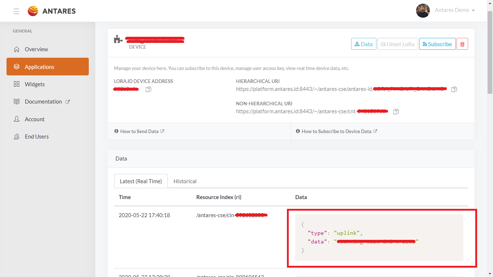
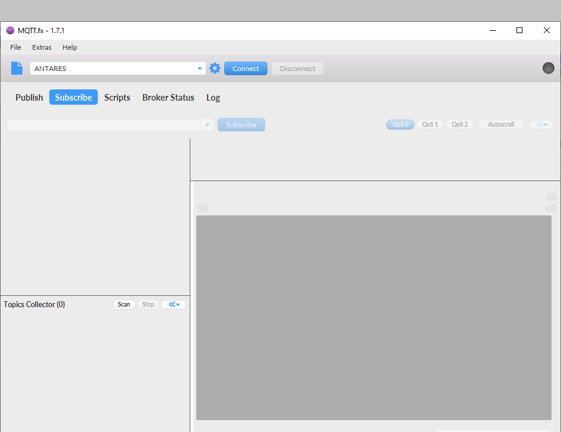
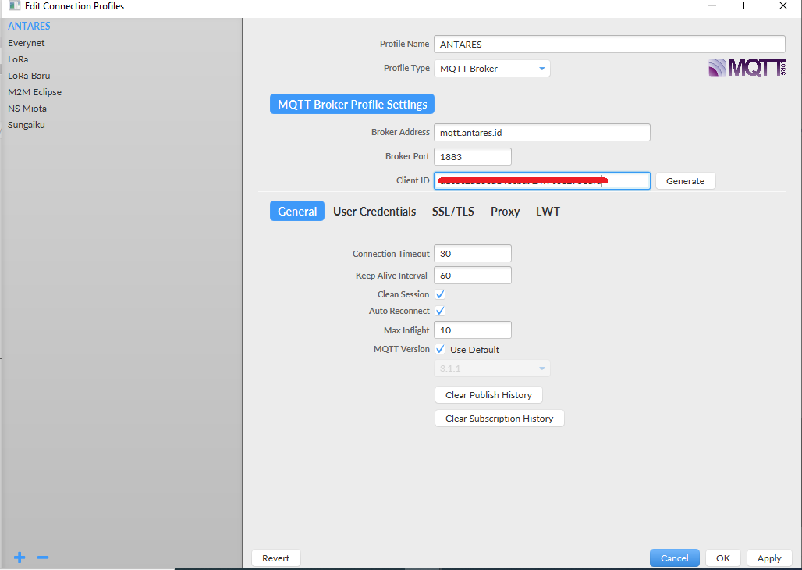
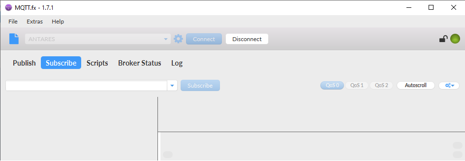
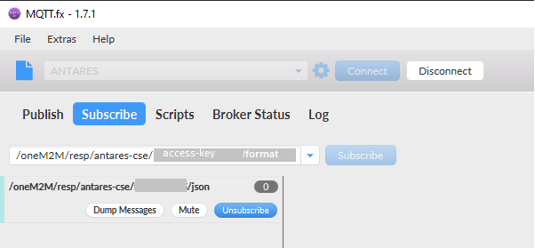
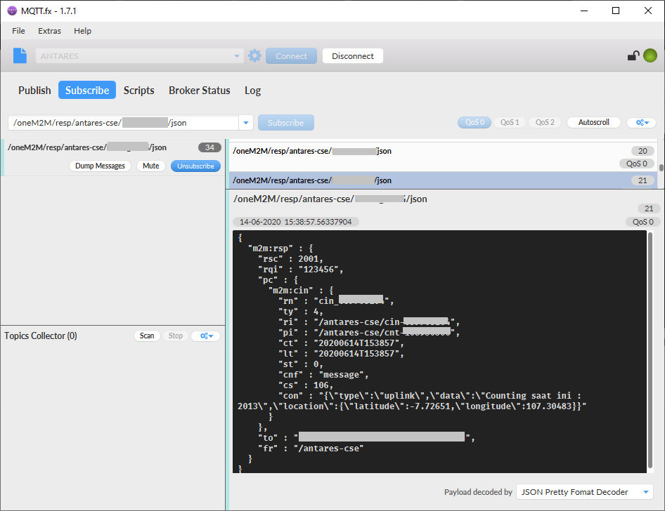

Prasyarat
- Memiliki software MQTT FX. Jika Anda belum memilikinya, silakan buka link berikut link. MQTT FX.
- Memiliki perangkat lora yang aktif dan mengirimkan data ke Platform ANTARES.
Langkah-langkah
- Pastikan sudah mengaktifkan perangkat lora dan juga sudah mengirimkan data ke Platform ANTARES. Jika belum, bisa mengikuti LoRa Tutorial
- Perangkat LoRa yang aktif akan mengirimkan data dengan format type uplink dan disertakan dengan datanya, seperti pada contoh pada gambar
- Salin access key pada akun yang ingin di-subscribe.
- Buka software MQTT FX. Antarmuka pengguna ditunjukkan pada gambar berikut.
- Pertama, Anda perlu mengonfigurasi agar Anda dapat terhubung dengan MQTT Broker kami. Konfigurasi ditunjukkan seperti dibawah ini. 
- Ketika Anda berhasil terhubung, akan muncul ikon berwarna hijau pada sebelah kanan atas.
- Klik Subscribe, kemudian jalankan subscribe a topic dengan mengikuti format berikut:
/oneM2M/resp/antares-cse/your-access-key/choose-a-serialization-format
Parameterchoose-a-serialization-formatdapat mempunyai 2 nilai:xmluntuk format XMLjsonuntuk format JSON
 - Seteleh mensubscribe topic dengan format topic yang benar, Anda cukup mengunggu hingga perangkat Anda mengirimkan data. Jika data sudah terikirim, maka akan muncul pada kolom di bagian kanan sperti pada gambar.

Semua data didalam "con" sesuai dengan data yang dikirimkan dari device perangkat Anda. Anda dapat membuat data format milik Anda pada device LoRa milik anda.
Selamat!! Anda baru saja mendapatkan request pertama dengan menggunakan MQTT API.